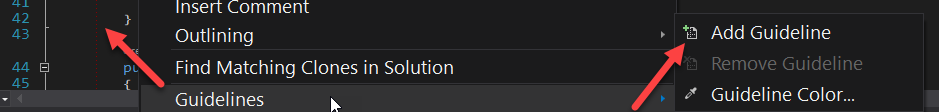
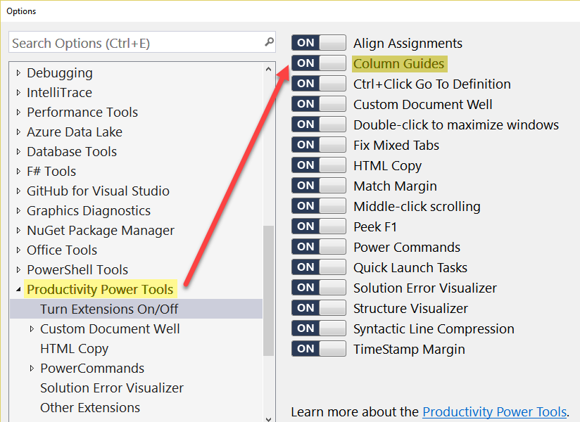

Introduction
I've always been searching for a way to make Visual Studio draw a line after a
certain amount of characters.
Below is a guide to enable these so called guidelines for various versions
of Visual Studio.
Visual Studio 2013 or later
Install Paul Harrington's Editor Guidelines extension.
Visual Studio 2010 and 2012
- Install Paul Harrington's Editor Guidelines extension for VS 2010 or VS 2012.
-
Open the registry at:
VS 2010: HKEY_CURRENT_USER\Software\Microsoft\VisualStudio\10.0\Text Editor
VS 2012: HKEY_CURRENT_USER\Software\Microsoft\VisualStudio\11.0\Text Editor
and add a new string called Guides with the value RGB(100,100,100), 80.
The first part specifies the color, while the other one (80) is the column
the line will be displayed.
-
Or install the Guidelines UI extension (which is also a part of the Productivity Power Tools), which will add entries to the editor's context menu for adding/removing the entries without needing to edit the registry directly. The current disadvantage of this method is that you can't specify the column directly.
Visual Studio 2008 and Other Versions
If you are using Visual Studio 2008 open the registry at
HKEY_CURRENT_USER\Software\Microsoft\VisualStudio\9.0\Text Editor and add a
new string called Guides with the value RGB(100,100,100), 80. The first
part specifies the color, while the other one (80) is the column the line
will be displayed. The vertical line will appear, when you restart Visual
Studio.
This trick also works for various other version of Visual Studio, as long as
you use the correct path:
2003: HKEY_CURRENT_USER\Software\Microsoft\VisualStudio\7.1\Text Editor
2005: HKEY_CURRENT_USER\Software\Microsoft\VisualStudio\8.0\Text Editor
2008: HKEY_CURRENT_USER\Software\Microsoft\VisualStudio\9.0\Text Editor
2008 Express: HKEY_CURRENT_USER\Software\Microsoft\VCExpress\9.0\Text Editor
This also works in SQL Server 2005 and probably other versions.
Answer
For those running Visual Studio 2015 or later, the best solution is to install
the Editor Guidelines by Paul Harrington rather than changing the registry
yourself.
This is originally from Sara's blog.
It also works with almost any version of Visual Studio, you just need to
change the "8.0" in the registry key to the appropriate version number for
your version of Visual Studio.
The guide line shows up in the Output window too. (Visual Studio 2010 corrects
this, and the line only shows up in the code editor window.)
You can also have the guide in multiple columns by listing more than one
number after the color specifier:
Puts a white line at column 4 and column 80. This should be the value of a
string value Guides in "Text Editor" key (see bellow).
Be sure to pick a line color that will be visible on your background. This
color won't show up on the default background color in VS. This is the value
for a light grey: RGB(221, 221, 221).
Here are the registry keys that I know of:
Visual Studio 2010 : HKCU\Software\Microsoft\VisualStudio\10.0\Text Editor
Visual Studio 2008 : HKCU\Software\Microsoft\VisualStudio\9.0\Text Editor
Visual Studio 2005 : HKCU\Software\Microsoft\VisualStudio\8.0\Text Editor
Visual Studio 2003 : HKCU\Software\Microsoft\VisualStudio\7.1\Text Editor
Productivity Power Tools includes guidelines and other useful extensions for
older versions of Visual Studio.
Suggest
Without the need to edit any registry keys, the Productivity Power Tools
extension (available for all versions of visual studio) provides guideline
functionality.
Once installed just right click while in the editor window and choose the add
guide line option. Note that the guideline will always be placed on the column
where your editing cursor is currently at, regardless of where you right click
in the editor window.

To turn off go to options and find Productivity Power Tools and in that
section turn off Column Guides. A reboot will be necessary.
